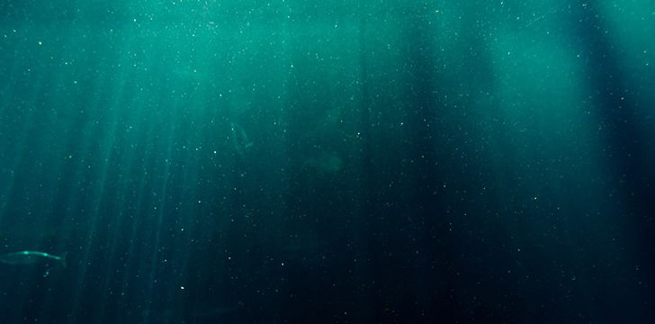
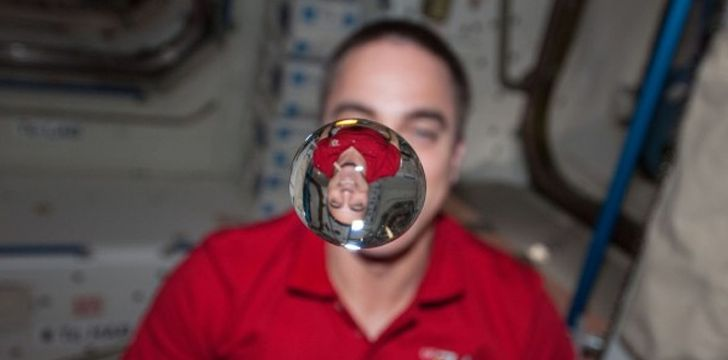
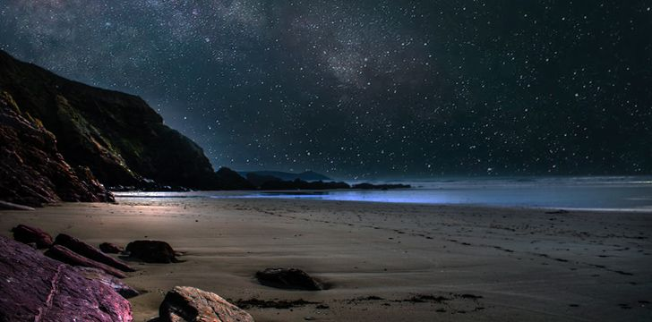
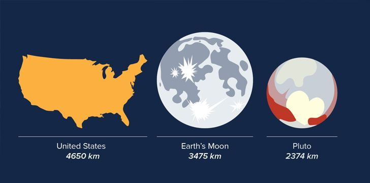
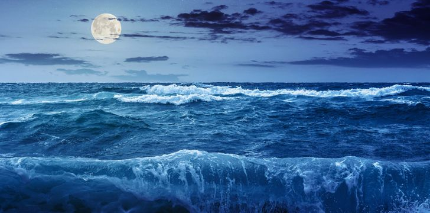

We know more about Mars and our Moon than we do about our oceans.
We have fully mapped 100% of the surface of Mars and Earth’s Moon, whereas we have only been able to map roughly 5% of the ocean floor.


Any free-moving liquid in outer space will form itself into a sphere.This is because of something called surface tension, which is an imbalance of intermolecular attractive forces.
There are more stars in space than there are grains of sand in the world.
There are 10 times more stars in the night sky than grains of sand on the Earth, with 70 sextillion stars being visible from Earth through a telescope.
To put that in numbers, 70 sextillion is this: 70,000,000,000,000,000,000,000.


Pluto is smaller than the United States. If you were to walk around the equator of Pluto it would be the same distance as walking from London to Denver (well, give or take 56 miles).
Due to the Sun and Moon’s gravitational pull, we have tides.This is because the Moon’s tidal force causes the Earth – and the water on it – to bulge out on the side closest to the Moon.
These bulges are what cause the world’s high tides.
